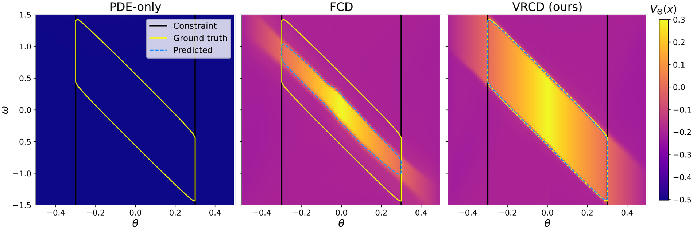
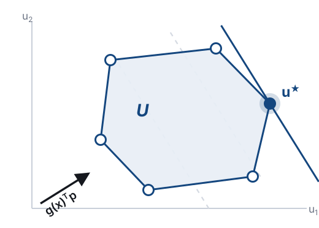
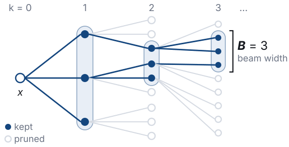
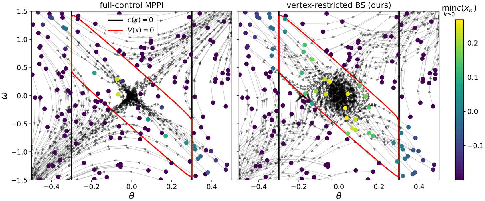
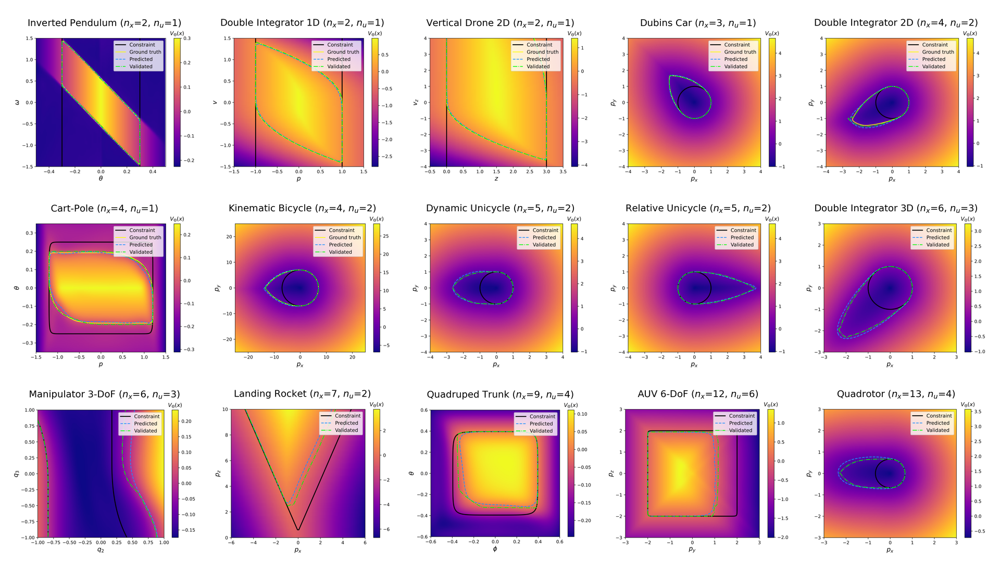
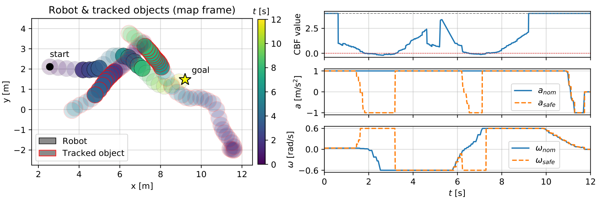
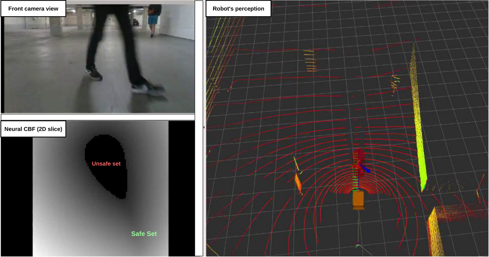
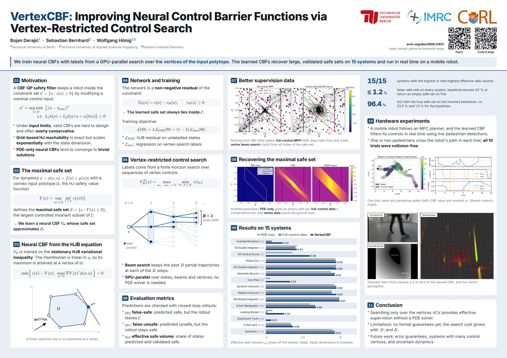

Abstract
As the number of autonomous robots continues to grow, safety becomes increasingly important. Control barrier functions (CBFs) provide a theoretically grounded framework for ensuring safety, but existing design methods often face limitations in effectiveness, scalability, or interpretability, and may result in overly conservative safe sets.
In this paper, we propose VertexCBF, a framework for learning neural CBFs in a scalable, systematic, and explainable way. We approximate the stationary Hamilton–Jacobi value function using a neural network trained via a combination of physics-informed and sparsely supervised learning. By exploiting control-affine dynamics and a convex polytope control set, under which the Hamiltonian is maximized at the control vertices, we efficiently generate supervision points via GPU-parallel vertex-restricted tree search, while a residual architecture guarantees that the learned CBF is never larger than the specified constraint function. We evaluate the method on 15 systems and compare it against relevant baselines, showing that it reliably recovers large safe sets where the baselines are conservative or fail completely. In addition, we perform a hardware experiment in which a mobile robot safely avoids pedestrians using a neural CBF trained with our method.
Method
We consider control-affine dynamics \(\dot x = f(x) + g(x)u\) with a compact convex polytope control set \(\mathcal U\) and a constraint set \(\mathcal C = \{x : c(x) \ge 0\}\). The Hamilton–Jacobi safety value function
\[ V(x) = \sup_{u(\cdot)\,\in\,\mathcal U}\ \inf_{t\,\ge\,0}\ c\bigl(x(t)\bigr) \]
characterises the maximal safe set \(\mathcal S = \{x : V(x) \ge 0\}\), the largest controlled invariant subset of \(\mathcal C\). We learn a neural approximation \(V_\Theta\) and use it directly as a CBF in a QP safety filter, so that the certified set \(\mathcal S_h\) is as close as possible to \(\mathcal S\).
Key idea: the Hamiltonian is maximised at a control vertex
The Hamiltonian is linear in the control. Over a convex polytope the maximum is therefore attained at a vertex:
\[ H(x,p) = p^\top\! f(x) + \max_{u\,\in\,\mathcal V} p^\top\! g(x)\,u, \qquad \mathcal V = \operatorname{vert}(\mathcal U) \]
So the search for optimal controls can be restricted to the finite set \(\mathcal V\), instead of optimising over all of \(\mathcal U\).


A CBF that cannot exceed the constraint set
We train \(V_\Theta\) on the stationary HJB variational inequality, evaluating the maximisation exactly over the finite vertex set,
\[ \min\Bigl\{\, c(x) - V(x),\ \ \max_{u\,\in\,\mathcal V} \nabla V(x)^\top\!\phi(x,u) \,\Bigr\} = 0, \]
and parametrise the network as a non-negative residual of the constraint function, \(V_\Theta(x) = c(x) - r_\Theta(x)\) with \(r_\Theta \ge 0\). The learned safe set is therefore contained in \(\mathcal C\) by construction, and the constant solutions that make the PDE objective degenerate become unnatural for the network to express — which is why no pretraining and no curriculum schedule are needed.
Supervision from a vertex-restricted tree search
Labels are the value of a finite-horizon search over vertex control sequences,
\[ V^{K}_{\Delta t}(x) = \max_{u_0,\dots,u_{K-1}\,\in\,\mathcal V}\ \ \min_{0\,\le\,k\,\le\,K}\ c(x_k), \]
where the states follow the forward-Euler map \(x_{k+1} = x_k + \Delta t\,\phi(x_k, u_k)\).
- The tree has branching factor \(M = |\mathcal V|\) and depth \(K\). Beam search, stochastic beam search and branch & bound keep the best \(B\) partial trajectories, scored by the running minimum of \(c\).
- Everything is batched on the GPU across initial states, beam entries and vertices — cost \(\mathcal O(NKBM)\), with no PDE solver and no sampling-based trajectory optimisation.
- A width-limited search returns a lower bound on the full vertex-restricted value, so the label error is in the conservative direction.
Training objective
\[ \mathcal L(\Theta) = \lambda\,\mathcal L_{\mathrm{PDE}}(\Theta) + (1-\lambda)\,\mathcal L_{\mathrm{data}}(\Theta) \]
\(\mathcal L_{\mathrm{PDE}}\) penalises pointwise violations of the HJB-VI on densely sampled unlabelled collocation states, while \(\mathcal L_{\mathrm{data}}\) regresses onto the search labels at a sparse set of states, steering the optimisation away from the spurious minima that the physics-informed objective admits on its own. The residual \(r_\Theta\) is a sinusoidal-activation MLP with a softplus output; periodic states enter as \((\cos\theta, \sin\theta)\).
Results
Where the supervision comes from


Validation protocol
Because there are no formal convergence guarantees, every learned CBF is validated by large-scale closed-loop rollouts from stratified initial states, under the Hamiltonian-maximising policy. We report three complementary metrics:
- \(\rho_{\mathrm{FS}}\) — false-safe rate: the fraction of states in the predicted safe set whose rollout leaves \(\mathcal C\). Is the certificate trustworthy?
- \(\rho_{\mathrm{FU}}\) — false-unsafe rate: the fraction of states outside the predicted safe set whose rollout stays safe. How conservative is it?
- \(\eta_{\mathrm{eff}}\) — effective safe volume: the share of the state space that is both predicted and validated safe.
A good method has small \(\rho_{\mathrm{FS}}\) and large \(\eta_{\mathrm{eff}}\). We compare three supervision schemes that share the same architecture, hyperparameters and validation protocol, and differ only in the training labels: ND (no data, PDE loss only), FCD (full-control data from MPPI) and VRCD (vertex-restricted control data, ours).
| System (nx, nu) | ρFS (%) ↓ | ρFU (%) ↓ | ηeff ↑ | ||||||
|---|---|---|---|---|---|---|---|---|---|
| ND | FCD | VRCD | ND | FCD | VRCD | ND | FCD | VRCD | |
| Inverted Pendulum (2, 1) | 100.00 | 0.00±0.00 | 0.00±0.00 | 0.00±0.00 | 15.96±0.53 | 1.11±0.30 | 0.00±0.00 | 0.08±0.00 | 0.22±0.00 |
| 1D Double Integrator (2, 1) | 0.00±0.00 | 0.00±0.00 | 0.00±0.00 | 0.95±0.56 | 4.01±0.42 | 1.18±0.31 | 0.41±0.00 | 0.39±0.00 | 0.41±0.00 |
| 2D Vertical Drone (2, 1) | 36.80±5.39 | — | 0.00±0.00 | 4.73±6.81 | 4.72±6.81 | 1.88±0.46 | 0.35±0.20 | 0.00±0.00 | 0.58±0.01 |
| Dubins Car (3, 1) | 0.06±0.04 | 0.01±0.01 | 0.04±0.01 | 4.75±1.28 | 4.33±0.31 | 2.25±0.28 | 0.92±0.00 | 0.92±0.00 | 0.93±0.00 |
| 2D Double Integrator (4, 2) | 0.03±0.01 | 0.00±0.00 | 0.03±0.01 | 4.68±0.25 | 6.84±0.30 | 3.42±0.22 | 0.93±0.00 | 0.92±0.00 | 0.93±0.00 |
| Kinematic Bicycle (4, 2) | 4.68±0.91 | 0.52±0.38 | 1.16±0.51 | 15.49±1.07 | 3.16±0.24 | 5.03±0.15 | 0.86±0.01 | 0.91±0.00 | 0.91±0.00 |
| Cart-Pole (4, 1) | 88.14±8.15 | — | 0.16±0.19 | 0.65±0.48 | 4.06±2.46 | 2.64±0.34 | 0.06±0.04 | 0.00±0.00 | 0.32±0.00 |
| Dynamic Unicycle (5, 2) | 4.17±0.89 | 0.09±0.09 | 0.23±0.26 | 2.93±0.38 | 5.50±0.42 | 6.49±0.44 | 0.90±0.01 | 0.93±0.00 | 0.93±0.00 |
| Relative Unicycle (5, 2) | 6.06±0.10 | 0.26±0.51 | 0.16±0.02 | 4.49±0.33 | 37.07±3.49 | 2.35±0.13 | 0.87±0.00 | 0.87±0.01 | 0.93±0.00 |
| 3D Double Integrator (6, 3) | 0.01±0.00 | 0.00±0.00 | 0.00±0.00 | 9.12±0.37 | 11.20±0.43 | 10.60±0.27 | 0.97±0.00 | 0.97±0.00 | 0.97±0.00 |
| 3-DOF Manipulator (6, 3) | 13.52±12.09 | 0.55±0.36 | 0.43±0.49 | 3.69±0.78 | 6.74±0.16 | 5.68±0.12 | 0.58±0.08 | 0.65±0.00 | 0.66±0.00 |
| Landing Rocket (7, 2) | 76.45±14.68 | 56.41±13.54 | 1.17±0.78 | 0.13±0.07 | 2.95±0.91 | 5.95±0.20 | 0.09±0.06 | 0.02±0.01 | 0.24±0.00 |
| Quadruped Trunk (9, 4) | 99.98±0.05 | — | 0.07±0.09 | 0.00±0.00 | 0.00±0.00 | 3.14±0.11 | 0.00±0.00 | 0.00±0.00 | 0.07±0.00 |
| 6-DoF Underw. Vehicle (12, 6) | 22.24±0.93 | 0.61±0.07 | 1.00±0.25 | 0.80±0.14 | 5.15±0.06 | 2.27±0.09 | 0.33±0.00 | 0.34±0.00 | 0.36±0.00 |
| Quadrotor (13, 4) | 5.75±0.20 | 1.21±0.08 | 1.07±0.12 | 11.18±0.35 | 9.50±0.42 | 10.10±0.42 | 0.88±0.00 | 0.91±0.00 | 0.91±0.00 |
CBF validation results, mean ± standard deviation over five seeds. ND = PDE loss only, FCD = full-control (MPPI) supervision, VRCD = vertex-restricted supervision (ours). Best value per metric in bold. A dash marks systems whose predicted safe set is empty for every seed; a missing standard deviation means ρFS is defined for a single seed only.
Comparison with the ground truth
For the seven systems with at most four states, a reference value function can be computed on a state-space grid. VertexCBF reaches the highest intersection over union on five of them and stays within 0.3 percentage points of the best value on the other two.
| System | ND | FCD | VRCD (ours) |
|---|---|---|---|
| Inverted Pendulum | 1.54±3.07 | 33.53±0.61 | 96.39±1.16 |
| 1D Double Integrator | 98.37±0.72 | 94.02±0.43 | 98.10±0.35 |
| 2D Vertical Drone | 64.09±32.05 | 0.00±0.00 | 98.48±0.20 |
| Dubins Car | 99.56±0.15 | 99.66±0.04 | 99.80±0.03 |
| 2D Double Integrator | 99.52±0.03 | 99.39±0.02 | 99.64±0.02 |
| Kinematic Bicycle | 97.71±0.24 | 99.65±0.00 | 99.59±0.00 |
| Cart-Pole | 65.07±0.22 | 0.00±0.00 | 93.38±0.35 |
Intersection over union (%) between the predicted and the ground-truth safe set, on the reference grid of every system for which one is available. Mean ± standard deviation over five seeds.
All fifteen systems


Hardware experiment
A mobile delivery robot navigates from a start to a goal position while pedestrians deliberately intercept its path. An MPC planner provides the nominal control, and a CBF-QP filter — using the learned relative-unicycle CBF together with live pedestrian tracks — modifies it to stay safe. All perception, localisation and optimisation run on the onboard computer. The robot avoided a collision in all 10 trials.




Poster

The CoRL 2026 poster, in A0 landscape.
Code
The reference implementation ships the library, YAML configs for all 15 systems of the paper, training and evaluation scripts, and two tutorial notebooks. The full-control sampling-based baselines (MPPI, CEM, iCEM, random shooting) are included for comparison. A CUDA GPU is strongly recommended for training.
git clone https://github.com/bojan-derajic/vertexcbf.git
cd vertexcbf
pip install -e .
# generate labels, train and validate a CBF for one system
python scripts/train.py --config configs/inverted_pendulum.yaml
# plot a 2-D slice of the learned CBF
python scripts/evaluate.py --config configs/inverted_pendulum.yaml \
--checkpoint checkpoints/VRC_DATA/inverted_pendulum/final.ptSupervision labels are selected in the data section of the config:
beam_search, stochastic_beam_search and
branch_and_bound search the control vertices, while mppi,
cem, icem and random_shooting reproduce the
full-control baselines. Copy configs/template.yaml to add your own system.
Citation
@inproceedings{derajic2026vertexcbf,
title = {{VertexCBF}: Improving Neural Control Barrier Functions
via Vertex-Restricted Control Search},
author = {Deraji{\'c}, Bojan and Bernhard, Sebastian and H{\"o}nig, Wolfgang},
booktitle = {Conference on Robot Learning (CoRL)},
year = {2026}
}Questions and issues are welcome at github.com/bojan-derajic/vertexcbf/issues, or by email to bojan.derajic@campus.tu-berlin.de.